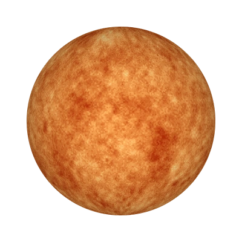
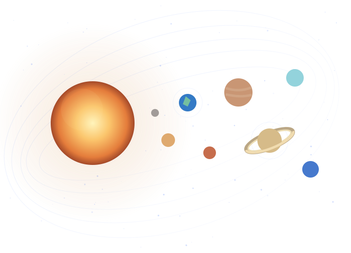
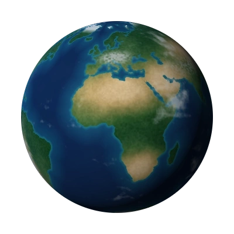
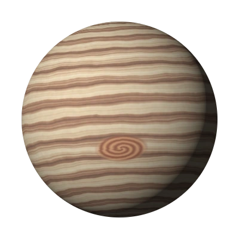
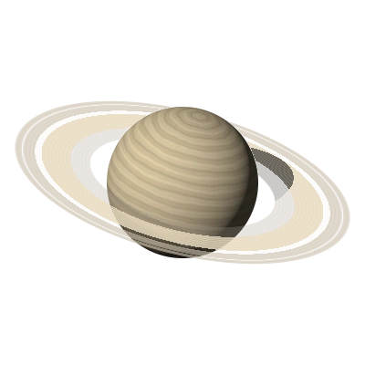
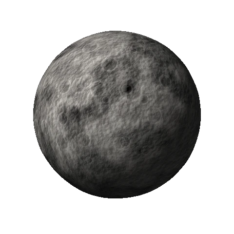
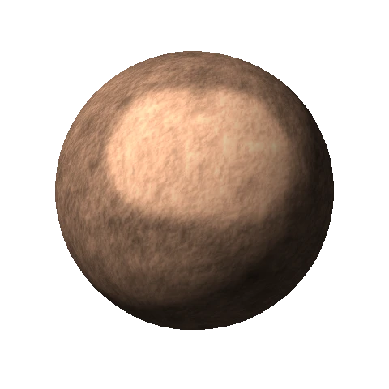
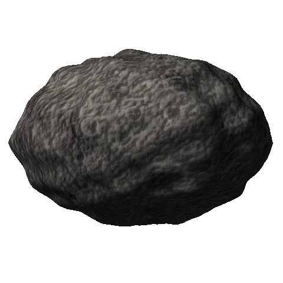
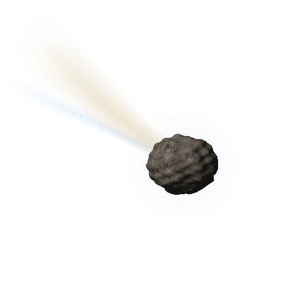

99,8 % hmotnosti sústavy
Naša hviezda
Slnko drží svojou gravitáciou celú sústavu pohromade. V jadre sa uvoľňuje energia jadrovou fúziou.
Preskúmať SlnkoSpoznaj Slnečnú sústavu, objav všetkých osem planét a otestuj svoje vedomosti v krátkom kvíze.

Slnečnú sústavu tvorí Slnko a všetky telesá, ktoré obiehajú okolo neho. Patria sem planéty, trpasličie planéty, mesiace, asteroidy aj kométy.

Slnko drží svojou gravitáciou celú sústavu pohromade. V jadre sa uvoľňuje energia jadrovou fúziou.
Preskúmať Slnko


Štyri vnútorné kamenné planéty a štyri vonkajšie obrie planéty.
Objaviť planéty
Od nášho Mesiaca po ľadové svety pri obrovských planétach.
Preskúmať kategóriu
Obiehajú Slnko a majú približne guľový tvar, ale nevyčistili okolie svojej dráhy.
Preskúmať kategóriu
Veľa asteroidov obieha medzi Marsom a Jupiterom v hlavnom páse asteroidov.
Preskúmať kategóriu
Pri priblížení k Slnku sa z ľadu uvoľňuje plyn a prach, ktoré vytvárajú komu a chvosty.
Preskúmať kategóriuIlustračné vizualizácie telies, nie v spoločnej mierke.
Klikni na planétu a zobrazia sa o nej ďalšie informácie.
Potiahni pre otáčanie. Koliesko alebo dva prsty pre zoom. Klávesnica: šípky, + a −.
VYBRANÁ PLANÉTA
Zem je naša domovská planéta a jediné známe miesto s potvrdeným životom. Má atmosféru a oceány.
* Údaje sú približné. Pri obrích planétach je teplota uvedená v atmosfére pri tlaku približne 1 bar (podobne ako pri hladine mora na Zemi), nie na pevnom povrchu. Dĺžka roka je v pozemských dňoch alebo rokoch. Zdroje: NASA – planéty, vzdialenosti, rozmery a obežné doby, teploty.
Voda pokrýva približne 71 % povrchu Zeme.
Slnko je hviezda z horúcej plazmy, zložená najmä z vodíka a hélia. Jeho gravitácia drží Slnečnú sústavu pohromade.
Slnko obsahuje približne 99,8 % hmotnosti Slnečnej sústavy.
Do objemu Slnka by sa zmestilo približne 1,3 milióna Zemí.
Stlač tlačidlo a objav novú zaujímavosť o vesmíre.
Na Venuši je vyššia priemerná povrchová teplota než na Merkúre, hoci je ďalej od Slnka.
Porovnaj veľkosť a priemernú vzdialenosť všetkých ôsmich planét od Slnka.
Pôvodné poradie od Slnka.
| Planéta | Priemer (km) | Vzdialenosť od Slnka (mil. km) |
|---|---|---|
MerkúrNajmenšia |
4 880 | 57,9 |
Venuša |
12 104 | 108,2 |
Zem |
12 756 | 149,6 |
Mars |
6 792 | 228 |
JupiterNajväčšia |
142 984 | 778,5 |
Saturn |
120 536 | 1 432 |
Urán |
51 118 | 2 867 |
Neptún |
49 528 | 4 500 |
Dĺžka pásu predstavuje rovníkový priemer v pomere k Jupiteru (100 %).
Priemery sú rovníkové a vzdialenosti od Slnka priemerné. Všetky hodnoty sú približné.
Skutočné astronomické snímky z teleskopov James Webb a Hubble. Klikni na fotografiu a zobraz ju vo väčšom formáte.
Fotografie: uvedení autori, ESA/Webb a ESA/Hubble (CC BY 4.0). Fotografie sa načítavajú z internetu; bez pripojenia sa zobrazia náhradné ilustrácie.
Vyber si výzvu a otestuj svoje vedomosti o vesmíre.
60 otázok, tri úrovne a vysvetlenie každej odpovede.
Zdroje otázok: NASA Solar System · NASA Universe · NASA Exoplanets
Sprievodca vesmírom je vzdelávacia webová stránka vytvorená pre predmet Technológie internetu. Spája astronomické informácie, interaktívne modely a vedomostnú hru.
Rýchly sprievodca · 2–3 minútyKlikni na pohybujúcu sa planétu alebo Slnko. Otvorí sa detail vybraného telesa.
Vyskúšať obežný modelVyber planétu, otáčaj model potiahnutím a približuj kolieskom alebo dvoma prstami.
Preskúmať modely planétOtvor kartu mesiacov, trpasličích planét, asteroidov alebo komét. Vyber jeden z 15 objektov.
Otvoriť atlas teliesStlač „Ďalšia zaujímavosť“. Najprv objavíš 12 rôznych faktov; môžeš sa aj vrátiť k predošlým.
Objaviť zaujímavostiZoraď tabuľku podľa priemeru alebo vzdialenosti od Slnka. Porovnaj veľkosti a obnov pôvodné poradie.
Vyskúšať triedenieOtvor jednu zo 4 fotografií. Približuj ju alebo prepni na 3D skúmanie, otáčaj kameru a zmeň grafickú kvalitu.
Preskúmať fotogalériuVyber obtiažnosť a 5, 10 alebo 15 otázok. Spusti hru, čítaj vysvetlenia a skontroluj výsledok aj chyby.
Vyskúšať kvízV hornej navigácii vyber SK, EN alebo UA. Obsah sa preloží bez obnovenia stránky.
Prejsť k výberu jazykaKlikni na tlačidlo farebného režimu v hlavičke. Stránka si zapamätá zvolenú tému.
Prejsť k prepínaču témySémantické sekcie, tabuľka, tlačidlá a dialógové okná.
Flexbox, Grid, media queries, animácie a farebné premenné.
Výber objektov, triedenie, kvíz, preklady a ovládanie kamery.
Hviezdne pozadie, modely telies a záložné vykresľovanie.
GPU vykresľovanie planét a objemových 3D scén galérie.
localStorage, Pointer Events, Fullscreen API, IntersectionObserver a requestAnimationFrame.
Samostatné HTML, CSS a JS súbory; bez externého JavaScriptového frameworku, servera či databázy.
Odložené načítavanie objemových dát, adaptívna kvalita galérie, ovládanie dotykom a klávesnicou, obmedzenie animácií.
Jazyk, téma, grafická kvalita galérie a rekordy kvízu sa ukladajú v localStorage.
Astronomické fotografie majú uvedené zdroje. 3D simulácie sú ilustračné; modely nie sú v spoločnej mierke. Externé snímky a mapy vyžadujú internet.
Máš otázku, nápad alebo spätnú väzbu? Ozvi sa mi.